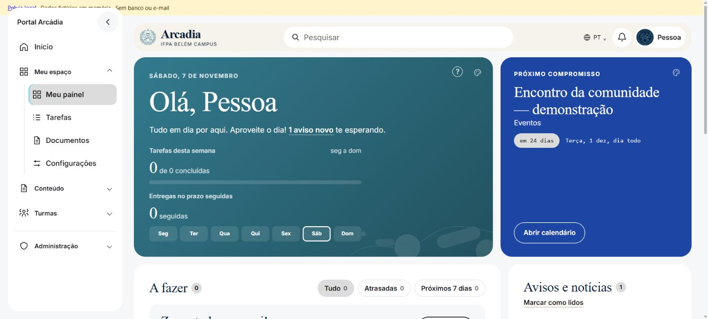
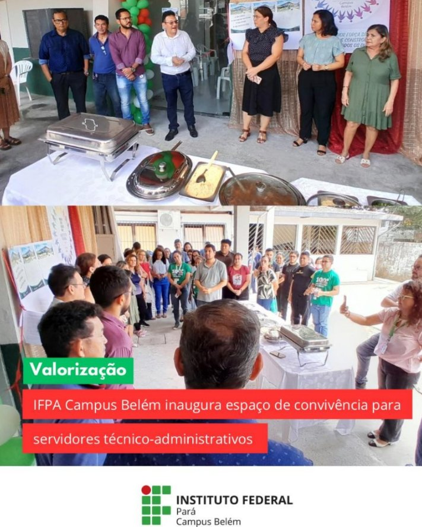

Alcance
Informações organizadas por data, categoria e público, sem depender de mensagens espalhadas.
Conheça a Arcádia
Notícias, avisos, tarefas, calendário, documentos e projetos do IFPA Campus Belém em um só lugar. Veja o que o portal oferece e como começar.
O que é a Arcádia?
A Arcádia é um mural digital e um espaço de organização acadêmica. Reúne avisos, prazos e documentos para acompanhar a vida no campus com clareza.
Informações organizadas por data, categoria e público, sem depender de mensagens espalhadas.
Consulte as publicações no navegador, no computador ou no celular, com conexão à internet.
Conheça iniciativas da comunidade e acompanhe as condições de participação nos projetos.
Dentro da plataforma
Cada área tem uma função. Use o menu lateral para navegar e os filtros para encontrar o que precisa.
Consulte comunicados, editais, matrículas, mudanças de horário e prazos. Pesquise pelo assunto, escolha o público e abra a publicação para ler os detalhes.
No menu: Conteúdo → Avisos e notícias.
Veja tarefas por prazo, avisos não lidos e próximas datas. Cadastre atividades, defina a entrega e marque como concluídas para acompanhar seu progresso de segunda a domingo.
No menu: Meu espaço → Meu painel ou Tarefas.
Organize arquivos e links em pastas, consulte materiais públicos e acompanhe solicitações acadêmicas. Quando a equipe responsável cadastrar um arquivo na solicitação, o download fica disponível.
No menu: Meu espaço → Documentos.
Consulte eventos públicos e acadêmicos conforme seu acesso, confira datas de provas e reposições e organize sua agenda pessoal. As cores ajudam a distinguir cada categoria.
No menu: Conteúdo → Calendário.
Conheça iniciativas de pesquisa, ensino e extensão. Abra o projeto para consultar descrição, situação, condições de participação e inscrições disponíveis para seu perfil.
No menu: Conteúdo → Projetos.
Acesse pelo navegador sem instalar um aplicativo. Abra os grupos do menu e use os filtros recolhidos para liberar espaço na tela. Em Configurações, ajuste o tema e a aparência.
Use o botão de menu no topo da tela.


Vida no campus · imagens de publicações do IFPA Campus Belém.
Para quem
Graduação e cursos técnicos: acompanhe matrículas e rematrículas, bolsas e editais, calendários de provas e reposições, prazos e atualizações do curso.
Consulte editais de extensão e pesquisa, prazos de lançamento de notas e atualizações do calendário. Acompanhe as turmas e disciplinas das quais participa.
Reúna comunicados de gestão, formulários, documentos internos e processos acadêmicos em um só lugar, de acordo com suas permissões.
Consulte publicações e projetos públicos. Uma conta externa permite usar os recursos disponíveis para esse perfil, sem conceder acesso às funções institucionais.
Primeiro acesso
Abra o cadastro, informe seus dados e um e-mail ao qual você tenha acesso. Siga as orientações de confirmação apresentadas na tela.
Escolha a opção correspondente à sua relação com o campus e forneça os dados solicitados. Perfis institucionais dependem de validação; selecionar um cargo não concede permissões automaticamente.
Faça login, conheça o menu lateral e comece pelas notícias e avisos. Depois, consulte as áreas disponíveis para sua conta e ajuste suas preferências em Configurações.
Antes de entrar
Qualquer pessoa pode consultar as publicações públicas. O cadastro permite acesso aos recursos do seu perfil; contas institucionais estão sujeitas à validação administrativa.
Não. A Arcádia é um projeto acadêmico gratuito, sem plano de assinatura ou cobrança para criar conta.
Os perfis institucionais dependem de validação administrativa dos dados solicitados. Informar um e-mail institucional ou selecionar um cargo não comprova, por si só, o vínculo. Não há verificação automática de cargo no SIGAA.
Não. O portal organiza publicações, tarefas, projetos e solicitações. Ele não consulta nem altera automaticamente notas, matrículas ou registros no SIGAA. Solicitar um documento não gera um documento oficial automaticamente.
Use seu e-mail e senha. A opção “Esqueci minha senha” orienta a recuperação. Quando habilitado, o Google permite entrar em uma conta já cadastrada e vinculada. A recuperação de senha depende do serviço de envio de e-mail. Siga as instruções apresentadas na tela.
Sim. Basta usar o navegador com conexão à internet. O menu e os filtros se adaptam à tela, e o tema pode ser ajustado em Configurações.
Precisa de ajuda? Fale com a equipe da Arcádia.